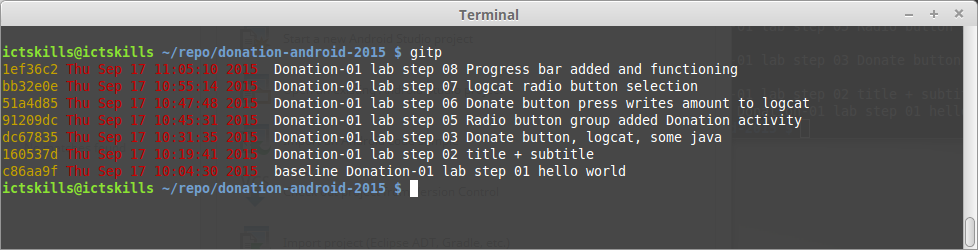
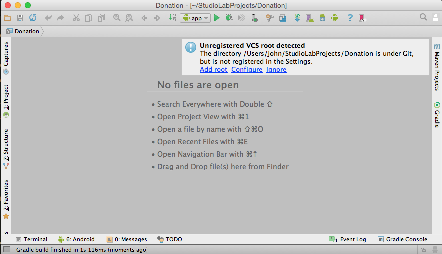
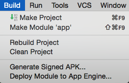
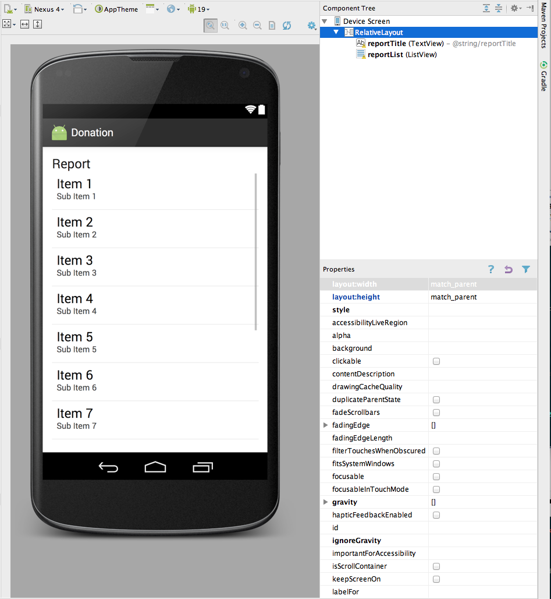

Objectives
Introduce a second screen to display the list of donations made by the user. In addition, enable our app its first "Model" objects, which will be used to store the individual donations made by the user.
Donation-01 Solutions
In this lab we shall all work on the NUC platform.
At the end of the lab you will commit and push your work to your Bitbucket accounts and download it into your personal computers.
In the Donation-01 lab you created a repository donation-android-2015. Save this to a secure location.
In this lab we shall provide a model solution to the lab (named donation-android-2015) so that we will all begin this Donation-02 with exactly the same code base. There already exists a folder in the NUC named repo. Many of you may have been developing here. Therefore it is important to avoid name clashes. If a folder named donation-android-2015 already exists in repo, either rename it, delete it or move it to a subfolder within repo.
You create a folder with the mkdir command:
mkdir <new folder>For example:
mkdir backup-projectsYou may remove a folder and all its contents with this (dangerous) command:
rm -rf <folder name>You may also move a folder. For example to move a folder named folder1 into a folder2:
mv folder 1 folder2/Note: do not omit the / at the end of, for example, folder2.
All passwords are ictskills.
You may move a folder as follows. For example, move donation-android-2015 to a backup-projects folder which is also in repo:
mv donation-android-2015 backup-projects/When you ready, download donation-android-2015 from GitHub as follows:
git clone https://github.com/wit-computing/donation-android-2015.git- GitHub is an alternative repository hosting company to BitBucket.
- In this instance neither a password nor an ssh key is required as the project is public.
- When you have downloaded the project, change into its root directory:
cd donation-android-2015 - Check the commits: use your customized log command (gitp). An example is shown here. 
- Check the tags: (git tag -n).
- There aren't any.
Build on this repository, making appropriate commits and tags, as you progress through this and subsequent Donation labs.
- You may wish to apply a tag at the end of each lab, for example, v1, v2, v3...
- Notice that in the downloaded project, all steps that involve code changes are committed separately. This has the advantage of being able to easily roll back to the beginning of the current step within a lab in the event that insurmountable difficulties arise.
- Before making any commits, remove GitHub as the remote repo and reconfigure git to use your name and email address. Here is the script to do that: just insert your name and email in the placeholders. Consult documentation if necessary.
git remote rm origin git user.name = "your name here" <------ use double quotes git user.email = "your email here" <------ use double quotes git config -l <------ execute this command to check
Launch Android Studio and open this project.
- If the project is not present in the Recent Projects panel, open the project as shown in Figure 1:

You may be presented with a message as shown in Figure 2 indicating an unregistered version control system (VCS).
- Click Add root.

Once you have opened the project in Android Studio you are ready to proceed with the lab, the first part of which is to provide solutions to the exercises at the end of Donation-01.
Package Name
This version is a little misconfigured - we have a leftover - the package name 'com.example.donation' form the project generation wizard.
This can be changed as follows:
- With the project imported to Android Studio, select Project in the Project Structure pane.
- Expand the folders in src to reveal com.example.donation packages in both androidTest and main.

- Create a new package app.donation in androidTest/java.
- Drag the file ApplicationTest to this new package.
- Create a new package app.donation in main/java.
- Drag file Donate to this new package.
- Both original packages, com.example.donation should be deleted automatically without user intervention.

- Change the package name to app.donation in AndroidManifest.xml.

- Change applicationID to app.donation in build.gradle.
- Sync Now if prompted.

- Sync Now if prompted.
- Check that the import statement in Donate.java is as follows:
import android.widget.Toast;
import app.donation.R;
public class Donate extends AppCompatActivity- Clean the project. 
- Test by rebuilding (Build | Rebuild) and running (Run | Run 'app').
Here is the revised structure:
Menu
Open res/values/Strings.xml and introduce a new String resource like this:
<string name="menuReport">Report</string>We have a menu resource called 'menu_donate.xml' in the res/menu folder. Modify this file by adding this new menu item:
<item
android:id="@+id/menuReport"
android:orderInCategory="100"
android:title="@string/menuReport"/>(Make sure it is within the <menu> element)
In Donate.java, change the onOptionsItemSelected method to look like this:
@Override
public boolean onOptionsItemSelected(MenuItem item)
{
switch (item.getItemId())
{
case R.id.menuReport:
Toast toast = Toast.makeText(this, "Report Selected", Toast.LENGTH_SHORT);
toast.show();
break;
}
return true;
}Run the app and when you press the menu button (or the overflow menu) and select 'Report', you should see the toast message appear.
Reports Activity
Before we start to design a new activity, Add a string resource in res/values/strings.xml:
<string name="reportTitle">Report</string>Design a new layout called activity_report. Do this by locating the res/layout folder and selecting new->layout resource file:
Call the layout file activity_report

We would like the resource to look like this:

For the monment, to achieve this - just replace the xml with the following:
<RelativeLayout xmlns:android="http://schemas.android.com/apk/res/android"
xmlns:tools="http://schemas.android.com/tools"
android:layout_width="match_parent"
android:layout_height="match_parent"
android:paddingBottom="@dimen/activity_vertical_margin"
android:paddingLeft="@dimen/activity_horizontal_margin"
android:paddingRight="@dimen/activity_horizontal_margin"
android:paddingTop="@dimen/activity_vertical_margin"
tools:context=".Test" >
<TextView
android:id="@+id/reportTitle"
android:layout_width="wrap_content"
android:layout_height="wrap_content"
android:layout_alignParentLeft="true"
android:layout_alignParentRight="true"
android:layout_alignParentTop="true"
android:text="@string/reportTitle"
android:textAppearance="?android:attr/textAppearanceLarge" />
<ListView
android:id="@+id/reportList"
android:layout_width="match_parent"
android:layout_height="wrap_content"
android:layout_alignLeft="@+id/reportTitle"
android:layout_below="@+id/reportTitle" >
</ListView>
</RelativeLayout>You should see the design render as above.
We can now introduce a new Class into app.donation to render this activity:
package app.donation;
import app.donation.R;
import android.app.Activity;
import android.os.Bundle;
import android.widget.ArrayAdapter;
import android.widget.ListView;
public class Report extends Activity
{
ListView listView;
static final String[] numbers = new String[] {
"Amount, Pay method",
"10, Direct",
"100, PayPal",
"1000, Direct",
"10, PayPal",
"5000, PayPal"};
@Override
public void onCreate(Bundle savedInstanceState)
{
super.onCreate(savedInstanceState);
setContentView(R.layout.activity_report);
listView = (ListView) findViewById(R.id.reportList);
ArrayAdapter<String> adapter = new ArrayAdapter<String>(this, android.R.layout.simple_list_item_1, numbers);
listView.setAdapter(adapter);
}
}This will display a hard-coded lists of donations.
Back in Donation class, change the Donate activity to load this view when 'Report' selected from menu:
@Override
public boolean onOptionsItemSelected(MenuItem item)
{
switch (item.getItemId())
{
case R.id.menuReport : startActivity (new Intent(this, Report.class));
break;
}
return true;
}This requires an import statement:
import android.content.Intent;All of this will not work until you add the activity specification to the AndroidManifest.xml file:
<activity
android:name="app.donation.Report"
android:label="@string/donateTitle" >
</activity>The above must be carefuly positioned - this is the full AndroidManifest.xml file here:
<?xml version="1.0" encoding="utf-8"?>
<manifest xmlns:android="http://schemas.android.com/apk/res/android"
package="app.donation" >
<application
android:allowBackup="true"
android:icon="@mipmap/ic_launcher"
android:label="@string/app_name"
android:theme="@style/AppTheme" >
<activity
android:name="app.donation.Donate"
android:label="@string/app_name" >
<intent-filter>
<action android:name="android.intent.action.MAIN" />
<category android:name="android.intent.category.LAUNCHER" />
</intent-filter>
</activity>
<activity
android:name="app.donation.Report"
android:label="@string/donateTitle" >
</activity>
</application>
</manifest>Note the location of the new element.
Try it all now - it should load. Here is an example using the inbuilt emulator (AVD).

Application Object
In order to keep out application design coherent, we now bring in an 'Application' object.
Create a new class called `DonationApp':
Incorporate this class here:
package app.donation;
import android.app.Application;
import android.util.Log;
public class DonationApp extends Application
{
@Override
public void onCreate()
{
super.onCreate();
Log.v("Donate", "Donation App Started");
}
}Application objects need to be referenced in the AndroidManifest.xml
android:name="app.donation.DonationApp"It is inserted into the application element - here is the full manifest:
<?xml version="1.0" encoding="utf-8"?>
<manifest xmlns:android="http://schemas.android.com/apk/res/android"
package="app.donation">
<application
android:allowBackup="true"
android:icon="@mipmap/ic_launcher"
android:label="@string/app_name"
android:theme="@style/AppTheme"
android:name="app.donation.DonationApp">
<activity
android:name="app.donation.Donate"
android:label="@string/app_name" >
<intent-filter>
<action android:name="android.intent.action.MAIN" />
<category android:name="android.intent.category.LAUNCHER" />
</intent-filter>
</activity>
<activity
android:name="app.donation.Report"
android:label="@string/donateTitle" >
</activity>
</application>
</manifest>Make sure the 'Donation App Started' appears in the logs when the application is started:
The filter used here is:

Donation Model
Create a new class called Donation:
package app.donation;
public class Donation
{
public int amount;
public String method;
public Donation (int amount, String method)
{
this.amount = amount;
this.method = method;
}
}This is a revised version of DonationApp class:
package app.donation;
import java.util.ArrayList;
import java.util.List;
import android.app.Application;
import android.util.Log;
import android.widget.Toast;
public class DonationApp extends Application
{
public final int target = 10000;
public int totalDonated = 0;
public List <Donation> donations = new ArrayList<Donation>();
public boolean newDonation(Donation donation)
{
boolean targetAchieved = totalDonated > target;
if (!targetAchieved)
{
donations.add(donation);
totalDonated += donation.amount;
}
else
{
Toast toast = Toast.makeText(this, "Target Exceeded!", Toast.LENGTH_SHORT);
toast.show();
}
return targetAchieved;
}
@Override
public void onCreate()
{
super.onCreate();
Log.v("Donate", "Donation App Started");
}
}It manages a list of donations. It also centralises the 'makeDonation' as as a method.
Refactored Donate
The Donate activity can now be completely re factored to make use of the DonationApp object.
First, introduce this new member into the class:
private DonationApp app;and in the onCreate meethod, initialize app:
app = (DonationApp) getApplication();Finally, we can replace the donatButtonPressed method with this simplified version:
public void donateButtonPressed (View view)
{
String method = paymentMethod.getCheckedRadioButtonId() == R.id.PayPal ? "PayPal" : "Direct";
int donatedAmount = amountPicker.getValue();
if (donatedAmount == 0)
{
String text = amountText.getText().toString();
if (!text.equals(""))
donatedAmount = Integer.parseInt(text);
}
if (donatedAmount > 0)
{
app.newDonation(new Donation(donatedAmount, method));
progressBar.setProgress(app.totalDonated);
String totalDonatedStr = "$" + app.totalDonated;
amountTotal.setText(totalDonatedStr);
}
}Try this now and see if everything works as expected.
Here is the complete Donate class if there is a problem:
package app.donation;
import android.content.Intent;
import android.support.v7.app.AppCompatActivity;
import android.os.Bundle;
import android.view.Menu;
import android.view.MenuItem;
import android.view.View;
import android.widget.Button;
import android.widget.EditText;
import android.widget.RadioGroup;
import android.widget.NumberPicker;
import android.widget.ProgressBar;
import android.widget.TextView;
public class Donate extends AppCompatActivity
{
private Button donateButton;
private RadioGroup paymentMethod;
private ProgressBar progressBar;
private NumberPicker amountPicker;
private int totalDonated;
private int target;
private TextView amountText;
private TextView amountTotal;
private DonationApp app;
@Override
protected void onCreate(Bundle savedInstanceState)
{
super.onCreate(savedInstanceState);
setContentView(R.layout.activity_donate);
app = (DonationApp) getApplication();
donateButton = (Button) findViewById(R.id.donateButton);
paymentMethod = (RadioGroup) findViewById(R.id.paymentMethod);
progressBar = (ProgressBar) findViewById(R.id.progressBar);
amountPicker = (NumberPicker) findViewById(R.id.amountPicker);
amountTotal = (TextView) findViewById(R.id.amountTotal);
amountText = (EditText) findViewById(R.id.amountText);
amountPicker.setMinValue(0);
amountPicker.setMaxValue(1000);
progressBar.setMax(10000);
totalDonated = 0;
target = 10000;
}
@Override
public boolean onCreateOptionsMenu(Menu menu)
{
// Inflate the menu; this adds items to the action bar if it is present.
getMenuInflater().inflate(R.menu.menu_donate, menu);
return true;
}
public void donateButtonPressed (View view)
{
String method = paymentMethod.getCheckedRadioButtonId() == R.id.PayPal ? "PayPal" : "Direct";
int donatedAmount = amountPicker.getValue();
if (donatedAmount == 0)
{
String text = amountText.getText().toString();
if (!text.equals(""))
donatedAmount = Integer.parseInt(text);
}
if (donatedAmount > 0)
{
app.newDonation(new Donation(donatedAmount, method));
progressBar.setProgress(app.totalDonated);
String totalDonatedStr = "$" + app.totalDonated;
amountTotal.setText(totalDonatedStr);
}
}
@Override
public boolean onOptionsItemSelected(MenuItem item)
{
switch (item.getItemId())
{
case R.id.menuReport : startActivity (new Intent(this, Report.class));
break;
}
return true;
}
}Refactored Report
We now rework Report to render the actual donations - held in the DonationApp list.
First some layout additions. Include these new string in strings.xml
<string name="defaultAmount">00</string>
<string name="defaultMethod">N/A</string>In the layout folder, create a new layout called row_layout.xml - replace the generated contents with the following:
<?xml version="1.0" encoding="utf-8"?>
<RelativeLayout xmlns:android="http://schemas.android.com/apk/res/android"
android:layout_width="match_parent"
android:layout_height="match_parent" >
<TextView
android:id="@+id/row_amount"
android:layout_width="wrap_content"
android:layout_height="wrap_content"
android:layout_alignParentLeft="true"
android:layout_alignParentTop="true"
android:layout_marginLeft="48dp"
android:layout_marginTop="20dp"
android:text="@string/defaultAmount" />
<TextView
android:id="@+id/row_method"
android:layout_width="wrap_content"
android:layout_height="wrap_content"
android:layout_alignBaseline="@+id/row_amount"
android:layout_alignBottom="@+id/row_amount"
android:layout_marginLeft="106dp"
android:layout_toRightOf="@+id/row_amount"
android:text="@string/defaultMethod" />
</RelativeLayout>The designer should look like this:
Finally, rework Report class to remove the hard coded values - and use a different 'adapter'
This is the complete class here:
package app.donation;
import android.app.Activity;
import android.content.Context;
import android.os.Bundle;
import android.view.LayoutInflater;
import android.view.View;
import android.view.ViewGroup;
import android.widget.ArrayAdapter;
import android.widget.ListView;
import android.widget.TextView;
import java.util.List;
public class Report extends Activity
{
private ListView listView;
private DonationApp app;
@Override
public void onCreate(Bundle savedInstanceState)
{
super.onCreate(savedInstanceState);
setContentView(R.layout.activity_report);
app = (DonationApp) getApplication();
listView = (ListView) findViewById(R.id.reportList);
DonationAdapter adapter = new DonationAdapter (this, app.donations);
listView.setAdapter(adapter);
}
}
class DonationAdapter extends ArrayAdapter<Donation>
{
private Context context;
public List<Donation> donations;
public DonationAdapter(Context context, List<Donation> donations)
{
super(context, R.layout.row_layout, donations);
this.context = context;
this.donations = donations;
}
@Override
public View getView(int position, View convertView, ViewGroup parent)
{
LayoutInflater inflater = (LayoutInflater) context.getSystemService(Context.LAYOUT_INFLATER_SERVICE);
View view = inflater.inflate(R.layout.row_layout, parent, false);
Donation donation = donations.get(position);
TextView amountView = (TextView) view.findViewById(R.id.row_amount);
TextView methodView = (TextView) view.findViewById(R.id.row_method);
amountView.setText("" + donation.amount);
methodView.setText(donation.method);
return view;
}
@Override
public int getCount()
{
return donations.size();
}
}We will discuss this version in depth in class
If all goes well - then you should be able to make donations, and and the see a list of these in the report activity.
Repository
Here we shall describe how you can break the association with GitHub that you established to download the baseline donation-android-2015 and push your refactored application to a new repository that you will create on your Bitbucket account.
Access your Bitbucket account and create a repository named donation-android-2015
- If a similarly named repo already exists on your Bitbucket account then change its name to something like donation-android-v1:
- This may easily be done by:
- clicking on the repo to be renamed,
- clicking on the gear wheel located on the bottom left hand side,
- changing the name under Repository details | Name
- Pressing the Save repository details button.
- This may easily be done by:
On the NUC cd into donation-android-2015 and run the following commands in sequence.
git remote rm originThis last command removes the association with GitHub.
Now bring your local repo up to date, associate it with the newly created repo on Bitbucket and push all:
git add .
git commit -m "Donation-02 lab complete"Before running this next command it will be necessary to replace the placeholders jdoe@wit.ie and jdoe with the email you registered on Bitbucket and your login id:
git remote add origin https://jdoe@wit.org/jdoe/donation-android-2015.git <------- See Figure 2Finally, push your repo to Bitbucket:
git push -u origin --all
git push -u origin --tagsYou will be asked for your Bitbucket password.
Use the clone statement to complete the expression git remote add origin above. See Figure 2.

On your PC cd to where you locate your repos and run the SSH clone command. You have already have installed ssh on your pc during the summer school.
- This will pull the latest commit of donation-android-2015.
Exercises
Project so far:
Also available to clone from GitHub:
git clone https://github.com/wit-computing/donation-android-2015.gitExercise 1
Run the app and insert amounts of varying lengths (1, 222, 23, 2323). Note that the second column - payment method -may be displayed at different positions. If this happens, fix it.
Hint: each row is laid out by a row_donate.xml layout. The easiest way to fix this would be to experiment with they layout, and have the text fields aligned with the edges and not with eachother.
Exercise 2
When a donation is accepted, set the amount on screen to 0 (in both picker and text field).
Exercise 3
When you navigate from the Donate activity to reports, there will be no menu available. Bring in a menu, with two options 'Settings' and 'Donate' - Donate should bring you back to the donate screen.
Exercise 4
Introduce a new welcome screen - which should display a greeting + give the user 2 options (as simple buttons)
- Signup
- Login
When Login is pressed, the app should take you directly to the Donate activity (for the moment).
Exercise 5
Introduce a Signup Activity, which should present the user with:
- First Name
- Last Name
Password
a 'Register' button.
Pressing Register should take you directly to "Donate" activity. Also, refactor the Welcome screen such that the 'signup' button takes you to this screen.
Exercise 6:
Introduce a Login activty, which should just look for
password
a 'Login' button
Pressing Login should take you directly to "Donate" activity.
Exercise 7
Bring in a new menu option - 'logout'. It should take you to the welcome screen, and should be available from the donate and report activities.
Exercise 8
Introduce a 'User' into the models package to represent the user in the usual way. Maintain a list of Users in the DonationApp object. Whenever anyone registers, then create a new User object in this list.
Exercise 9
Implement the Login activity, to now only let users in to Donate if they are registered (i.e. a matching email + password in the list of users maintained by DonationApp)